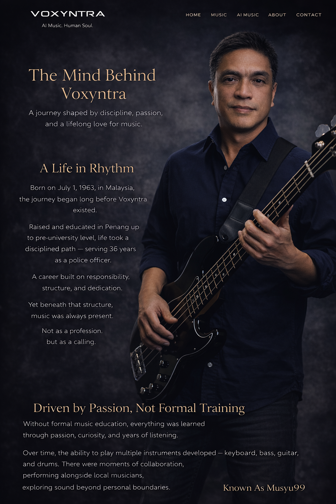

Drag and Drop Website BuilderA journey shaped by discipline, passion, and a lifelong love for music.

Voxyntra was created not only to produce music, but to build a creative space.
A space for individuals who share the same passion — to explore, create, and push the boundaries of AI music together.
At the same time, this platform exists to give meaning to every creation.
Each track is not just sound,
but a story,
an idea,
a feeling waiting to be understood.
Through Voxyntra, every piece of music will carry its own meaning — to be shared, explained, and experienced.
Drag and Drop Website Builder